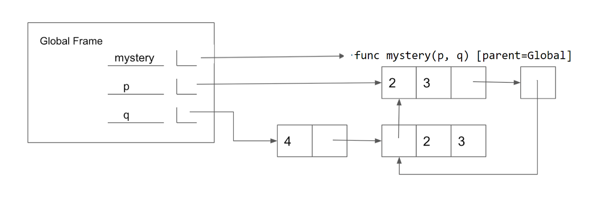

Discussion 6: Mutability, Iterators, Generators
Mutability
Some objects in Python, such as lists and dictionaries, are mutable, meaning that their contents or state can be changed. Other objects, such as numeric types, tuples, and strings, are immutable, meaning they cannot be changed once they are created.
Let's imagine you order a mushroom and cheese pizza from La Val's, and they represent your order as a list:
>>> pizza = ['cheese', 'mushrooms']With list mutation, they can update your order by mutate pizza directly
rather than having to create a new list:
>>> pizza.append('onions')
>>> pizza
['cheese', 'mushrooms', 'onions']Aside from append, there are various other list mutation methods:
append(el): Addelto the end of the list. ReturnNone.extend(lst): Extend the list by concatenating it withlst. ReturnNone.insert(i, el): Insertelat indexi. This does not replace any existing elements, but only adds the new elementel. ReturnNone.remove(el): Remove the first occurrence ofelin list. Errors ifelis not in the list. ReturnNoneotherwise.pop(i): Remove and return the element at indexi.
We can also use list indexing with an assignment statement to change an existing element in a list. For example:
>>> pizza[1] = 'tomatoes'
>>> pizza
['cheese', 'tomatoes', 'onions']Q1: WWPD: Mutability
What would Python display? In addition to giving the output, draw the box and pointer diagrams for each list to the right.
>>> x = [1, 2, 3]
>>> y = x
>>> x += [4]
>>> x>>> y # y is pointing to the same list as x, which got mutated>>> x = [1, 2, 3]
>>> y = x
>>> x = x + [4] # creates NEW list, assigns it to x
>>> x>>> y # y still points to OLD list, which was not mutated>>> s1 = [1, 2, 3]
>>> s2 = s1
>>> s1 is s2>>> s2.extend([5, 6])
>>> s1[4]>>> s1.append([-1, 0, 1])
>>> s2[5]>>> s3 = s2[:]
>>> s3.insert(3, s2.pop(3))
>>> len(s1)>>> s1[4] is s3[6]>>> s3[s2[4][1]]>>> s1[:3] is s2[:3]>>> s1[:3] == s2[:3]>>> s1[4].append(2)
>>> s3[6][3]Q2: Add This Many
Write a function that takes in a value x, a value el, and a list s, and adds el to the end of s
the same number of times that x occurs in s. Make sure to modify the original list using list mutation techniques.
Iterators
An iterable is an object where we can go through its elements one at a time.
Specifically, we define an iterable as any object where calling the built-in iter
function on it returns an iterator. An iterator is another type of object
which can iterate over an iterable by keeping track of which element is next in
the iterable.
For example, a sequence of numbers is an iterable,
since iter gives us an iterator over the given sequence:
>>> lst = [1, 2, 3]
>>> lst_iter = iter(lst)
>>> lst_iter
<list_iterator object ...>With an iterator, we can call next on it to get the next element in the
iterator. If calling next on an iterator raises a StopIteration exception,
this signals to us that the iterator has no more elements to go through. This
will be explored in the example below.
Calling iter on an iterable multiple times returns a new iterator each time
with distinct states (otherwise, you'd never be able to iterate through a
iterable more than once). You can also call iter on the iterator itself, which
will just return the same iterator without changing its state. However, note
that you cannot call next directly on an iterable.
For example, we can see what happens when we use iter and next with a list:
>>> lst = [1, 2, 3]
>>> next(lst) # Calling next on an iterable
TypeError: 'list' object is not an iterator
>>> list_iter = iter(lst) # Creates an iterator for the list
>>> next(list_iter) # Calling next on an iterator
1
>>> next(iter(list_iter)) # Calling iter on an iterator returns itself
2
>>> for e in list_iter: # Exhausts remainder of list_iter
... print(e)
3
>>> next(list_iter) # No elements left!
StopIteration
>>> lst # Original iterable is unaffected
[1, 2, 3]Note that we can also call the function list on finite iterators, and it will
list out the remaining items in that iterator.
>>> lst = [1, 2, 3, 4]
>>> list_iter = iter(lst)
>>> next(list_iter)
1
>>> list(list_iter) # Return remaining items in list_iter
[2, 3, 4]Q3: WWPD: Iterators
What would Python display?
>>> s = "cs61a"
>>> s_iter = iter(s)
>>> next(s_iter)>>> next(s_iter)>>> list(s_iter)>>> s = [[1, 2, 3, 4]]
>>> i = iter(s)
>>> j = iter(next(i))
>>> next(j)>>> s.append(5)
>>> next(i)>>> next(j)>>> list(j)>>> next(i)Generators
We can define custom iterators by writing a generator function, which returns a special type of iterator called a generator.
A generator function has at least one yield statement
and returns a generator object when we call it,
without evaluating the body of the generator function itself.
When we first call next on the returned generator,
then we will begin evaluating the body of the generator function until
an element is yielded or the function otherwise stops
(such as if we return).
The generator remembers where we stopped,
and will continue evaluating from that stopping point
on the next time we call next.
As with other iterators, if there are no more elements to be generated,
then calling next on the generator will give us a StopIteration.
For example, here's a generator function:
def countdown(n):
print("Beginning countdown!")
while n >= 0:
yield n
n -= 1
print("Blastoff!")To create a new generator object, we can call the generator function.
Each returned generator object from a function call will separately
keep track of where it is in terms of evaluating the body of the function.
Notice that calling iter on a generator object doesn't create a new
bookmark, but simply returns the existing generator object!
>>> c1, c2 = countdown(2), countdown(2)
>>> c1 is iter(c1) # a generator is an iterator
True
>>> c1 is c2
False
>>> next(c1)
Beginning countdown!
2
>>> next(c2)
Beginning countdown!
2In a generator function, we can also have a yield from statement,
which will yield each element from an iterator or iterable.
>>> def gen_list(lst):
... yield from lst
...
>>> g = gen_list([1, 2])
>>> next(g)
1
>>> next(g)
2
>>> next(g)
StopIterationSince generators are themselves iterators, this means we can use yield from
to create recursive generators!
>>> def rec_countdown(n):
... if n < 0:
... print("Blastoff!)
... else:
... yield n
... yield from rec_countdown(n-1)
...
>>> r = rec_countdown(2)
>>> next(r)
2
>>> next(r)
1
>>> next(r)
0
>>> next(r)
Blastoff!
StopIterationQ4: WWPD: Generators
What would Python display? If the command errors, input the specific error.
>>> def infinite_generator(n):
... yield n
... while True:
... n += 1
... yield n
>>> next(infinite_generator)>>> gen_obj = infinite_generator(1)
>>> next(gen_obj)>>> next(gen_obj)>>> list(gen_obj)>>> def rev_str(s):
... for i in range(len(s)):
... yield from s[i::-1]
>>> hey = rev_str("hey")
>>> next(hey)>>> next(hey)>>> next(hey)>>> list(hey)>>> def add_prefix(s, pre):
... if not pre:
... return
... yield pre[0] + s
... yield from add_prefix(s, pre[1:])
>>> school = add_prefix("schooler", ["pre", "middle", "high"])
>>> next(school)>>> list(map(lambda x: x[:-2], school))Q5: Filter-Iter
Implement a generator function called filter_iter(iterable, f) that only yields
elements of iterable for which f returns True.
Q6: Primes Generator
Write a function primes_gen that takes a single argument n and yields all prime
numbers less than or equal to n in decreasing order. Assume n >= 1.
You may use the is_prime function included below, which we implemented in
Discussion 3.
First approach this problem using a for loop and using yield.
Now that you've done it using a for loop and yield, try using yield from!
Optional Challenge: Now rewrite the generator so that it also prints the primes in ascending order.
Run in 61A CodeQ7: Generate Preorder
Part 1:
First define the function preorder, which takes in a tree as an argument and
returns a list of all the entries in the tree in the order that
print_tree would print them.
The following diagram shows the order that the nodes would get printed, with the arrows representing function calls.

Run in 61A CodeNote: This ordering of the nodes in a tree is called a preorder traversal.
Part 2:
Similarly to preorder defined above,
define the function generate_preorder,
which takes in a tree as an argument and
now instead yields the entries in the tree
in the order that print_tree would print them.
Run in 61A CodeHint: How can you modify your implementation of
preordertoyield fromyour recursive calls instead of returning them?
Q8: (Optional) Mystery Reverse Environment Diagram
Fill in the lines below so that the variables in the global frame are bound to the values below. Note that the image does not contain a full environment diagram. You may only use brackets, colons, p and q in your answer.
Hint: If you get stuck, feel free to try out different combinations in PythonTutor!

Run in 61A Code